🌷 郁金香泡沫
Tulip Bubble · 设计：红阳（Kouyou）· 摩埃创意工作室 Moaideas Game Design 出版（中文初版 2017 年，规则版本 4.0）
本页整理自微信公众号「桌游怎么玩」《郁金香泡沫，Tulip Bubble【桌游规则】》发布的摩埃创意工作室《TULIP BUBBLE 鬱金香泡沫》官方中文说明书（中文初版 2017 年 8 月 15 日，规则版本 4.0，共 12 页），逐页全文转录，原书扫描图随文嵌入——点击任意图片即可放大查看。规则内容归 Moaideas Game Design 及版权方所有，转录仅供个人学习查阅。
整理说明：原书为繁体中文，转录转写为简体；官译用语（「即将进货」「现货」「出售」「抵押保留」「供需反映」等）照录。P.7 范例「他从手牌卖出一将一张白色 C1」之「将」字系原书排印如此（疑为衍字），照录；P.6「你无法直接将抵押保留中的郁金香卖给收藏家已完成订单」一句照录。无法完全确认处已标注〔?〕。经人工逐页放大核对，两遍交叉验证。
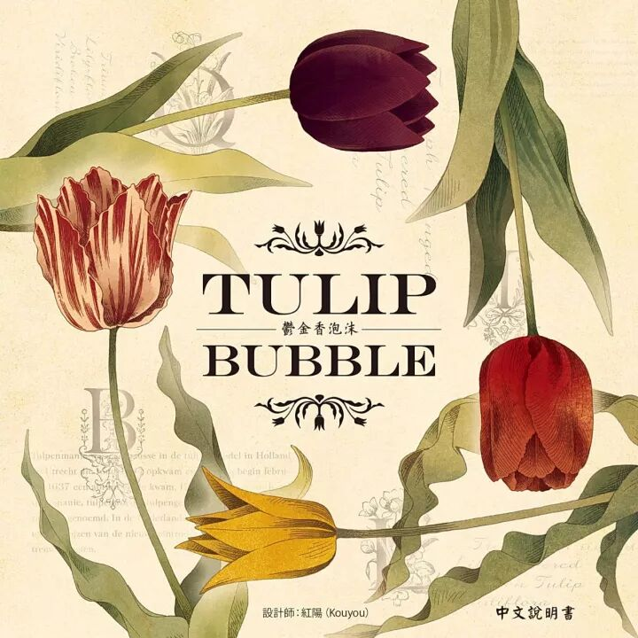
一、游戏介绍
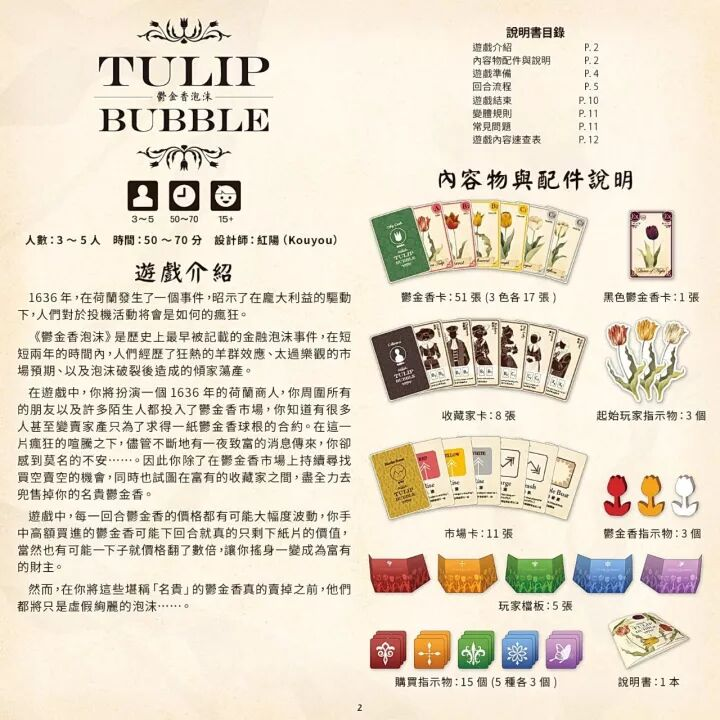
1636 年，在荷兰发生了一个事件，昭示了在庞大利益的驱动下，人们对于投机活动将会是如何的疯狂。
《郁金香泡沫》是历史上最早被记载的金融泡沫事件，在短短两年的时间内，人们经历了狂热的羊群效应、太过乐观的市场预期、以及泡沫破裂后造成的倾家荡产。
在游戏中，你将扮演一个 1636 年的荷兰商人，你周围所有的朋友以及许多陌生人都投入了郁金香市场，你知道有很多人甚至变卖家产只为了求得一份郁金香球根的合约。在这一片疯狂的喧嚣之下，尽管不断地有一夜致富的消息传来，你却感到莫名的不安……。因此你除了在郁金香市场上持续寻找买空卖空的机会，同时也试图在富有的收藏家之间，尽全力去兜售掉你的名贵郁金香。
游戏中，每一回合郁金香的价格都有可能大幅度波动，你手中高额买进的郁金香可能下回合就真的只剩下纸片的价值，当然也有可能一下子就价格翻了数倍，让你摇身一变成为富有的财主。
然而，在你将这些堪称「名贵」的郁金香真的卖掉之前，他们都将只是虚假绚丽的泡沫……。
人数：3～5 人 · 时间：50～70 分 · 设计师：红阳（Kouyou）
二、内容物与配件说明
- 郁金香卡：51 张（3 色各 17 张）
- 黑色郁金香卡：1 张
- 收藏家卡：8 张
- 起始玩家指示物：3 个
- 市场卡：11 张
- 郁金香指示物：3 个
- 玩家档板：5 张
- 购买指示物：15 个（5 种各 3 个）
- 说明书：1 本
- 荷兰盾：120 个（游戏内提到金钱皆代表荷兰盾）
| 面额 | 1 盾 | 5 盾 | 10 盾 | 25 盾 | 50 盾 |
|---|---|---|---|---|---|
| 数量 | 48 | 24 | 24 | 12 | 12 |
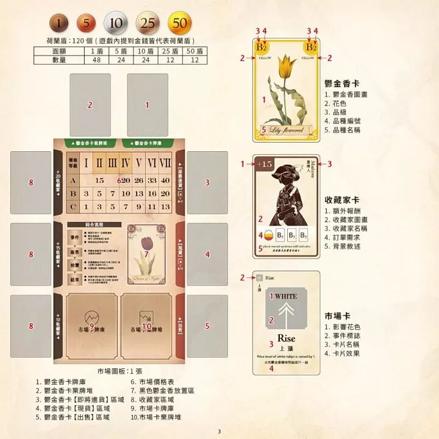
市场图版：1 张
- 郁金香卡牌库
- 郁金香卡弃牌堆
- 郁金香卡【即将进货】区域
- 郁金香卡【现货】区域
- 郁金香卡【出售】区域
- 市场价格表
- 黑色郁金香放置区
- 收藏家区域
- 市场卡牌库
- 市场卡弃牌堆
郁金香卡（示例：黄色 B2「Lily-flowered」）
1. 郁金香图画 · 2. 花色 · 3. 品级 · 4. 品种编号 · 5. 品种名称。
收藏家卡（示例：「贵妇人 Madame」，+15）
1. 额外报酬 · 2. 收藏家图画 · 3. 收藏家名称 · 4. 订单需求 · 5. 背景叙述。
市场卡（示例：「Rise 上升」）
1. 影响的花色 · 2. 事件描述 · 3. 卡片名称 · 4. 卡片效果。卡片效果示例：Price level of white tulips is raised by 1. 白色郁金香的价格上升一级。
三、游戏准备
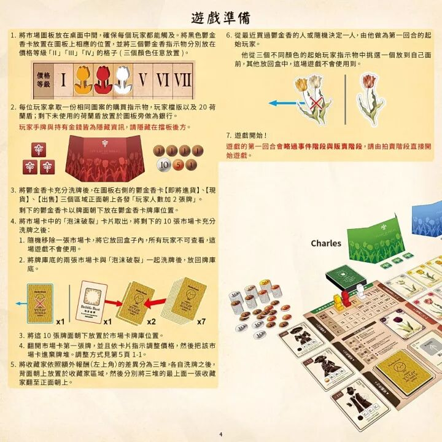
- 将市场图版放在桌面中间，确保每个玩家都能触及。将黑色郁金香卡放置在图版上相应的位置，并将三个郁金香指示物分别放在价格等级「II」「III」「IV」的格子（三个颜色任意放置）。
- 每位玩家拿取一份相同图案的购买指示物，玩家档版以及 20 荷兰盾；剩下未使用的荷兰盾放置于图版旁做为银行。
红字提示：玩家手牌与持有金钱皆为隐藏资讯，请隐藏在挡板后方。 - 将郁金香卡充分洗牌后，在图版右侧的郁金香卡【即将进货】【现货】【出售】三个区域正面朝上各发「玩家人数加 2 张牌」。剩下的郁金香卡以牌面朝下放在郁金香卡牌库位置。
- 将市场卡中的「泡沫破裂」卡片取出，将剩下的 10 张市场卡充分洗牌之后：
① 随机移除一张市场卡，将它放回盒子内，所有玩家不可查看，这场游戏不会使用。
② 将牌库底的两张市场卡与「泡沫破裂」一起洗牌后，放回牌库底。
③ 将这 10 张牌面朝下放置于市场卡牌库位置。
④ 翻开市场卡第一张牌，并且依卡片指示调整价格，然后把该市场卡进弃牌堆。调整方式见第 5 页 1-1。 - 将收藏家依照额外报酬（左上角）的差异分为三堆，各自洗牌之后，背面朝上放置于收藏家区域，然后分别将三堆的最上面一张收藏家翻至正面朝上。
- 从最近买过郁金香的人或随机决定一人，由他做为第一回合的起始玩家。他从三个不同颜色的起始玩家指示物中挑选一个放到自己面前，其他放回盒中，这场游戏不会使用到。
- 游戏开始！
红字提示：游戏的第一回合会略过事件阶段与贩卖阶段，请由拍卖阶段直接开始游戏。
四、回合流程
游戏将进行七到九个回合，每个回合分【事件阶段】【贩卖阶段】【拍卖阶段】【结束阶段】依序进行。
每回合开始时，先翻开一张市场卡并且执行它的效果，如果翻到「泡沫破裂」时立刻结束游戏。当郁金香进货后，把起始玩家指示物交给下一个玩家，然后所有玩家开始贩售郁金香。
接着，所有玩家轮流放置购买指示物在他们想要购买的郁金香卡上，如果有复数以上玩家想要购买同一张郁金香卡，将会开始进行拍卖。
当所有的拍卖都结束后，结算市场上剩余的各色郁金香数量，并调整市场价格，最后将所有【现货】与【出售】区域的郁金香全部移除到弃牌堆，进入下一个回合。
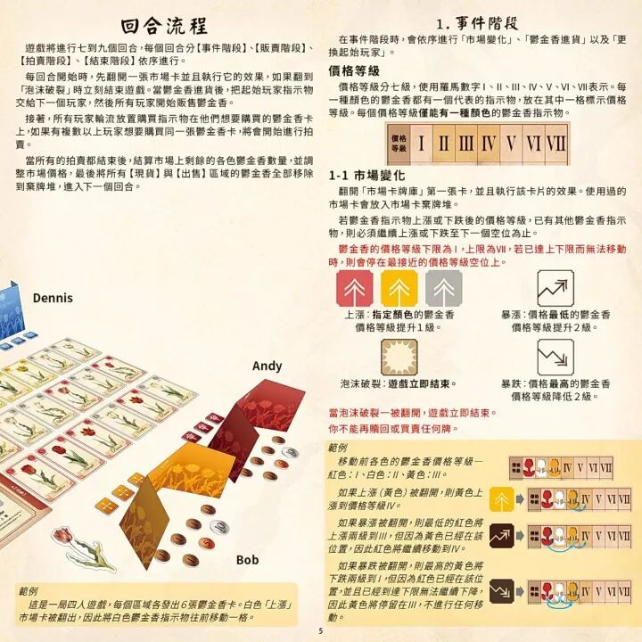
1. 事件阶段
在事件阶段时，会依序进行「市场变化」、「郁金香进货」以及「更換起始玩家」。
价格等级：价格等级分七级，使用罗马数字 I、II、III、IV、V、VI、VII 表示。每一种颜色的郁金香都有一个代表的指示物，放在其中一格标示价格等级。每个价格等级仅能有一种颜色的郁金香指示物。
1-1 市场变化
翻开「市场卡牌库」第一张卡，并且执行该卡片的效果。使用过的市场卡会放入市场卡弃牌堆。
若郁金香指示物上涨或下跌后的价格等级，已有其他郁金香指示物，则必须继续上涨或下跌至下一个空位为止。
红字提示：郁金香的价格等级下限为 I，上限为 VII，若已达上下限而无法移动时，则会停在最接近的价格等级空位上。
市场卡效果：
- 上升：指定颜色的郁金香价格等级提升 1 级。
- 暴涨：价格最低的郁金香价格等级提升 2 级。
- 泡沫破裂：游戏立即结束。
- 暴跌：价格最高的郁金香价格等级降低 2 级。
红字提示：当泡沫破裂一被翻开，游戏立即结束。你不能再赎回或买卖任何牌。
范例：移动前各色的郁金香价格等级—红色：I、白色：II、黄色：III。
- 如果上涨（黄色）被翻开，则黄色上涨到价格等级 IV。
- 如果暴涨被翻开，则最低的红色将上涨两级到 III，但因为黄色已经在该位置，因此红色将继续移动到 IV。
- 如果暴跌被翻开，则最高的黄色将下跌两级到 I，但因为红色已经在该位置，并且已经到达下限无法继续下降，因此黄色将停留在 III，不进行任何移动。
这是一局四人游戏，每个区域各发出 6 张郁金香卡。白色「上涨」市场卡被翻出，因此将白色郁金香指示物往前移动一格。
1-2 郁金香进货
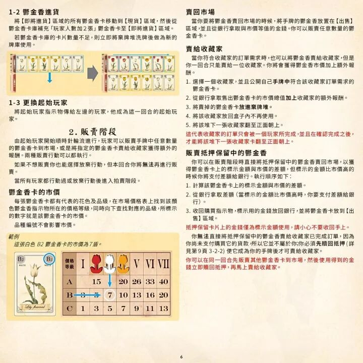
将【即将进货】区域的所有郁金香卡移动到【现货】区域，然后从郁金香卡库补充「玩家人数加 2 张」郁金香卡至【即将进货】区域。
若郁金香卡库的卡片数量不足，则立即将弃牌堆洗牌后做为新的牌库使用。
1-3 更换起始玩家
将起始玩家指示物传给左边的玩家，他成为这一回合的起始玩家。
2. 贩卖阶段
由起始玩家开始顺时针轮流进行，玩家可以贩卖手牌中任意数量的郁金香卡到市场，或是将指定的郁金香卡卖给收藏家获得额外的报酬。两种贩卖行动可以都执行。
如果不想贩卖你也能选择放弃行动，但本回合你将无法再进行贩卖。
当所有玩家都行动过或放弃行动后进入拍卖阶段。
郁金香卡的市价
每张郁金香卡都有代表的花色及品级，在市场价格表上找到该颜色郁金香指示物所在的价格等级，同时向下查找对应的品级，所标示的数字就是该郁金香卡的市价。品种编号不会影响市价。
范例：这张白色 B2 郁金香卡的市价为 7 盾。
卖回市场
当你要将郁金香卖回市场的时候，将手牌的郁金香放置在【出售】区域，并且从银行拿取与市价等值的金钱。你可以贩卖任意数量的郁金香卡。
卖给收藏家
当你符合收藏家的订单需求时，也可以将郁金香卖给收藏家，但是你一回合只能卖给一位收藏家。你将会获得郁金香市价加上额外报酬。
- 选择一个收藏家，并且公开自己手牌中符合该收藏家订单需求的郁金香卡。
- 从银行拿取售出郁金香卡的市价总值加上收藏家的额外报酬。
- 将卖掉的郁金香卡放进弃牌堆。
- 将该收藏家放回盒子内不再使用。
- 将该堆下一张收藏家翻至正面朝上。
红字提示：这代表收藏家的订单只会被一个玩家所完成，并且在确认完成之后，才能将该堆下一张收藏家卡翻至正面朝上。
贩卖抵押保留中的郁金香
你可以在贩卖阶段时直接将抵押保留中的郁金香卖回市场，以获得郁金香卡上的标示金额与市价的差额，但标示的金额比市价高的时候你将支付差额给银行。执行顺序如下：
- 计算该郁金香卡上的标示金额与市价的差额。
- 从银行拿取差额（当标示的金额比市价高时，你要支付差额给银行）。
- 收回购买指示物，标示用的金钱放回银行，并将郁金香卡放到【出售】区域。
红字提示：抵押保留卡片上的金钱仅为标示金额使用，请小心不要收回手上。
你无法直接将抵押保留中的郁金香卖给收藏家已完成订单，因为你尚未支付购买它的贷款，所以它并不属于你；你必须先赎回抵押（详见第 9 页 3-2-2）使它成为你的手牌后才可卖给收藏家。
红字提示：你可以在同一回合先贩卖其他郁金香卡到市场，然后使用得到的金钱立即赎回抵押，再马上卖给收藏家。
贩卖阶段范例
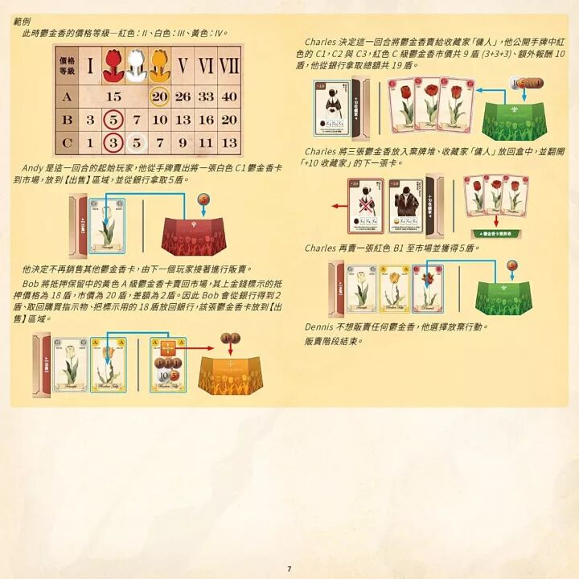
此时郁金香的价格等级—红色：II、白色：III、黄色：IV。
| 品级＼价格等级 | I | II | III | IV | V | VI | VII |
|---|---|---|---|---|---|---|---|
| A | 15（跨 I–III 一格） | 20 | 26 | 33 | 40 | ||
| B | 3 | 5 | 7 | 10 | 13 | 16 | 20 |
| C | 1 | 3 | 5 | 7 | 9 | 11 | 13 |
- Andy 是这一回合的起始玩家，他从手牌卖出一将一张白色 C1 郁金香卡到市场，放到【出售】区域，并从银行拿取 5 盾。〔原文如此：「卖出一将一张」疑为「卖出一张」衍字，照录〕他决定不再销售其他郁金香卡，由下一个玩家接著进行贩卖。
- Bob 将抵押保留中的黄色 A 级郁金香卡卖回市场，其上金钱标示的抵押价格为 18 盾，市价为 20 盾，差额为 2 盾。因此 Bob 会从银行得到 2 盾、取回购买指示物、把标示用的 18 盾放回银行，该张郁金香卡放到【出售】区域。
- Charles 决定这一回合将郁金香卖给收藏家「仆人」，他公开手牌中红色的 C1、C2 与 C3，红色 C 级郁金香市价共 9 盾（3+3+3）、额外报酬 10 盾，他从银行拿取总额共 19 盾。Charles 将三张郁金香放入弃牌堆、收藏家「仆人」放回盒中，并翻开「+10 收藏家」的下一张卡。Charles 再卖一张红色 B1 至市场并获得 5 盾。
- Dennis 不想贩卖任何郁金香，他选择放弃行动。贩卖阶段结束。
3. 拍卖阶段
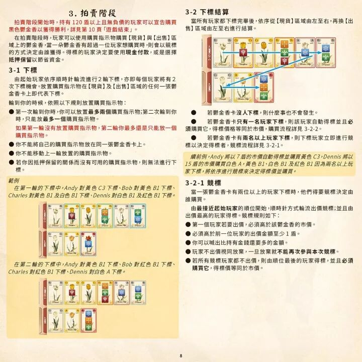
红字提示：拍卖阶段开始时，持有 120 盾以上且无负债的玩家可以宣告购买黑色郁金香以获得胜利，详见第 10 页「游戏结束」。
在拍卖阶段时，玩家可以使用购买指示物购买【现货】与【出售】区域上的郁金香，当一朵郁金香有超过一位玩家想购买时，则会以竞标的方式决定由谁获得。得标的玩家决定要使用现金付款，或是选择抵押保留以节省资金。
3-1 下标
由起始玩家依序顺时针轮流进行 2 轮下标，亦即每个玩家将有 2 次下标机会。放置购买指示物在【现货】及【出售】区域的任何一张郁金香卡上即代表下标。
轮到你的时候，依照以下规则放置购买指示物：
- 第一次轮到你时，你可以放置最多两个购买指示物；第二次轮到你时，只能放最多一个购买指示物。
红字提示：如果第一轮没有放置购买指示物，第二轮你最多还是只能放一个购买指示物。 - 你不能将自己的购买指示物放在同一张郁金香卡上。
- 你不能移动上一轮放置的购买指示物。
- 若你因抵押保留的关系而没有可用的购买指示物，则无法进行下标。
范例：在第一轮的下标中，Andy 对黄色 C3 下标、Bob 对黄色 B1 下标、Charles 对黄色 B1 及白色 B1 下标、Dennis 对白色 B1 及红色 B1 下标。在第二轮的下标中，Andy 对黄色 B1 下标、Bob 对红色 B1 下标、Charles 对红色 B1 下标、Dennis 对白色 A 下标。
3-2 下标结算
当所有玩家都下标完毕后，依序从【现货】区域由左至右，再换【出售】区域由左至右进行结算。
- 若郁金香卡没人下标，则什么事也不会发生。
- 若郁金香卡只有一名玩家下标，则该玩家自动得标并且必须购买它，得标价格等同于市价，购买流程详见 3-2-2。
- 若郁金香卡有两名以上玩家下标，则下标玩家立即进行竞标以决定得标者，竞标流程详见 3-2-1。
续前例，Andy 将以 7 盾的市价自动得标并购买黄色 C3，Dennis 将以 15 盾的市价购买白色 A，黄色 B1、白色 B1 及红色 B1 因为两名以上玩家下标，将依序进行竞标来决定得标价并购买。
3-2-1 竞标
当一张郁金香卡有两位以上的玩家下标时，他们得要竞标决定由谁购买。
由最接近起始玩家的顺位开始，顺时针方式轮流出价竞标；并且由出价最高的玩家得标。竞标规则如下：
- 第一个玩家若要出价，必须高于该郁金香的市价。
- 必须高于前一位玩家的出价金额至少 1 盾。
- 你可以喊出比持有金钱还要多的金额。
- 玩家不出价视同放弃，一旦放弃就不能再次参与本次竞标。
- 若所有竞标玩家都不出价，则由顺位最后的玩家得标，并且必须购买它，得标价等同于市价。
3-2-2 购买
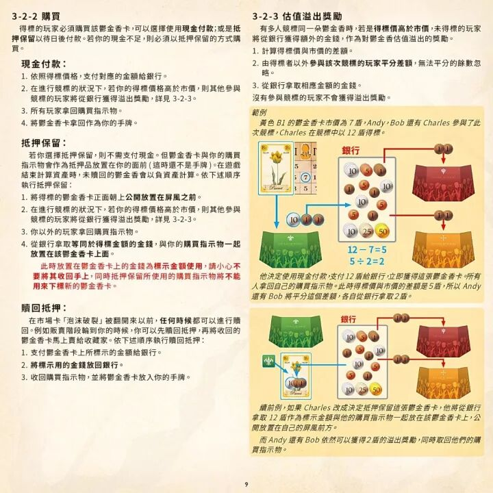
得标的玩家必须购买该郁金香卡，可以选择使用现金付款；或是抵押保留以待日后付款。若你的现金不足，则必须以抵押保留的方式购买。
现金付款：
- 依照得标价格，支付对应的金额给银行。
- 在进行竞标的状况下，若你的得标价格高于市价，则其他参与竞标的玩家将从银行获得溢出奖励，详见 3-2-3。
- 所有玩家拿回购买指示物。
- 将郁金香卡拿回作为你的手牌。
抵押保留：
若你选择抵押保留，则不需支付现金。但郁金香卡与你的购买指示物会作为抵押品放置在你的面前（这时还不是手牌）。在游戏结束计算资产时，未赎回的郁金香会以负资产计算。依下述顺序执行抵押保留：
- 将得标的郁金香卡正面朝上公开放置在屏风之前。
- 在进行竞标的状况下，若你的得标价格高于市价，则其他参与竞标的玩家将从银行获得溢出奖励，详见 3-2-3。
- 你以外的玩家拿回购买指示物。
- 从银行拿取等同于得标金额的金钱，与你的购买指示物一起放置在该郁金香卡上面。
红字提示：此时放置在郁金香卡上的金钱为标示金额使用，请小心不要将其收回手上，同时抵押保留所使用的购买指示物将不能用来下标新的郁金香卡。
赎回抵押：
在市场卡「泡沫破裂」被翻开以前，任何时候都可以进行赎回。例如贩卖阶段轮到你的时候，你可以先赎回抵押，再将收回的郁金香卡马上卖给收藏家。依下述顺序执行赎回抵押：
- 支付郁金香卡上所标示的金额给银行。
- 将标示用的金钱放回银行。
- 收回购买指示物，并将郁金香卡放入你的手牌。
3-2-3 估值溢出奖励
有多人竞标同一朵郁金香时，若是得标价高于市价，未得标的玩家将从银行获得额外的金钱，作为对郁金香估值溢出的奖励。
- 计算得标价与市价的差额。
- 由得标者以外参与该次竞标的玩家平分差额，无法平分的余数忽略。
- 从银行拿取相应金额的金钱。
没有参与竞标的玩家不会获得溢出奖励。
范例：黄色 B1 的郁金香卡市价为 7 盾，Andy、Bob 还有 Charles 参与了此次竞标，Charles 在竞标中以 12 盾得标（12−7=5，5÷2=2）。他决定使用现金付款，支付 12 盾给银行，立即获得这张郁金香卡。所有人拿回自己的购买指示物。此时得标价与市价的差额是 5 盾，所以 Andy 还有 Bob 将平分这个差额，各自从银行拿取 2 盾。
续前例，如果 Charles 改成决定抵押保留这张郁金香卡，他将从银行拿取 12 盾作为标示金额与他的购买指示物一起放在该郁金香卡上，公开放置在自己的屏风前方。而 Andy 还有 Bob 依然可以获得 2 盾的溢出奖励，同时取回他们的购买指示物。
4. 结束阶段
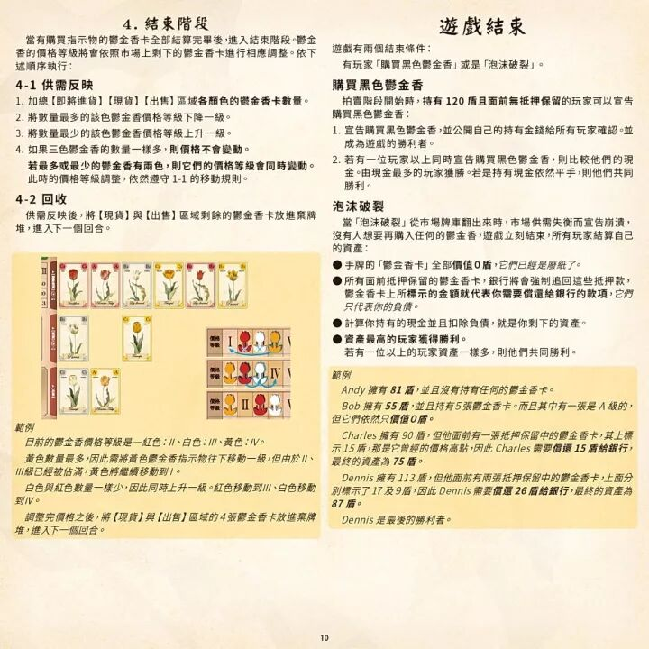
当有购买指示物的郁金香卡全部结算完毕后，进入结束阶段。郁金香的价格等级将会依照市场上剩下的郁金香卡进行相应调整。依下述顺序执行：
4-1 供需反映
- 加总【即将进货】【现货】【出售】区域各颜色的郁金香卡数量。
- 将数量最多的该色郁金香价格等级下降一级。
- 将数量最少的该色郁金香价格等级上升一级。
- 如果三色郁金香的数量一样多，则价格不会变动。
红字提示：若最多或最少的郁金香有两色，则它们的价格等级会同时变动。此时的价格等级调整，依然遵守 1-1 的移动规则。
4-2 回收
供需反映后，将【现货】与【出售】区域剩余的郁金香卡放进弃牌堆，进入下一个回合。
范例：目前的郁金香价格等级是—红色：II、白色：III、黄色：IV。黄色数量最多，因此需将黄色郁金香指示物往下移动一级，但由于 II、III 级已经被占满，黄色将继续移动到 I。白色与红色数量一样少，因此同时上升一级。红色移动到 III、白色移动到 IV。调整完价格之后，将【现货】与【出售】区域的 4 张郁金香卡放进弃牌堆，进入下一个回合。
五、游戏结束
游戏有两个结束条件：有玩家「购买黑色郁金香」或是「泡沫破裂」。
购买黑色郁金香
拍卖阶段开始时，持有 120 盾且面前无抵押保留的玩家可以宣告购买黑色郁金香：
- 宣告购买黑色郁金香，并公开自己的持有金钱给所有玩家确认。并成为游戏的胜利者。
- 若有一位玩家以上同时宣告购买黑色郁金香，则比较他们的现金。由现金最多的玩家获胜。若是持有现金依然平手，则他们共同胜利。
泡沫破裂
当「泡沫破裂」从市场牌库翻出来时，市场供需失衡而宣告崩溃，没有人想要再购入任何的郁金香，游戏立刻结束，所有玩家结算自己的资产：
- 手牌的「郁金香卡」全部价值 0 盾，它们已经是废纸了。
- 所有面前抵押保留的郁金香卡，银行将会强制追回这些抵押款，郁金香卡上所标示的金额就代表你需要偿还给银行的款项，它们只代表你的负债。
- 计算你持有的现金并且扣除负债，就是你剩下的资产。
- 资产最高的玩家获得胜利。若有一位以上的玩家资产一样多，则他们共同胜利。
范例：Andy 拥有 81 盾，并且没有持有任何的郁金香卡。Bob 拥有 55 盾，并且持有 5 张郁金香卡，而且其中有一张是 A 级的，但它们依然只价值 0 盾。Charles 拥有 90 盾，但他面前有一张抵押保留中的郁金香卡，其上标示 15 盾，那是它曾经的价格高点，因此 Charles 需要偿还 15 盾给银行，最终的资产为 75 盾。Dennis 拥有 113 盾，但他面前有两张抵押保留中的郁金香卡，上面分别标示了 17 及 9 盾，因此 Dennis 需要偿还 26 盾给银行，最终的资产为 87 盾。Dennis 是最后的胜利者。
六、变体规则
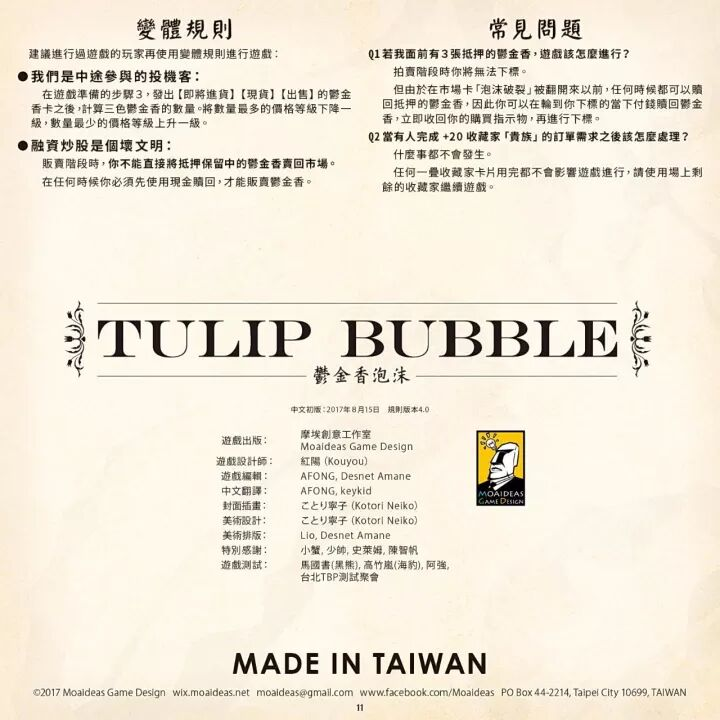
建议进行过游戏的玩家再使用变体规则进行游戏：
- 我们是中途参与的投机客：在游戏准备的步骤 3，发出【即将进货】【现货】【出售】的郁金香卡之后，计算三色郁金香的数量。将数量最多的价格等级下降一级，数量最少的价格等级上升一级。
- 融资炒股是个坏文明：贩卖阶段时，你不能直接将抵押保留中的郁金香卖回市场。在任何时候你必须先使用现金赎回，才能贩卖郁金香。
七、常见问题
Q1：若我面前有 3 张抵押的郁金香，游戏该怎么进行？
拍卖阶段时你将无法下标。但由于在市场卡「泡沫破裂」被翻开以前，任何时候都可以赎回抵押的郁金香，因此你可以在轮到你下标的当下付钱赎回郁金香，立即收回你的购买指示物，再进行下标。
Q2：当有人完成 +20 收藏家「贵族」的订单需求之后该怎么处理？
什么事都不会发生。任何一叠收藏家卡片用完都不会影响游戏进行，请使用场上剩余的收藏家继续游戏。
八、游戏内容速查表
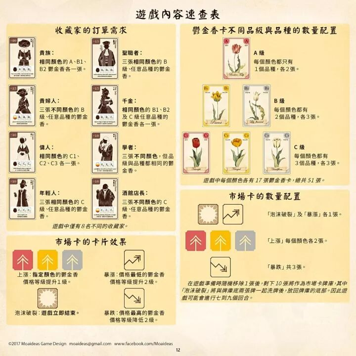
收藏家的订单需求
- 贵族（+20）：相同颜色的 A、B1、B2 郁金香各一张。
- 圣战士（+15）：三张相同颜色的 B 级、任意品种的郁金香。
- 贵妇人（+15）：三张不同颜色的 B 级、任意品种的郁金香。
- 千金（+25）：相同颜色的 B1、B2 及 C 级任意品种的郁金香各一张。
- 仆人（+10）：相同颜色的 C1、C2、C3 各一张。
- 学者（+10）：三张不同颜色，但品级与品种都相同的郁金香。
- 年轻人（+10）：三张相同颜色的 C 级、任意品种的郁金香。
- 酒馆店长（+10）：三张不同颜色的 C 级、任意品种的郁金香。
游戏中仅有 8 名不同的收藏家。
郁金香卡不同品级与品种的数量配置
- A 级：每个颜色都只有 1 个品种，各 2 张。
- B 级：每个颜色都有 2 个品种，各 3 张。
- C 级：每个颜色都有 3 个品种，各 3 张。
游戏中每个颜色各有 17 张郁金香卡，总共 51 张。
市场卡的数量配置
- 「泡沫破裂」及「暴涨」各 1 张。
- 「上涨」每个颜色各 2 张。
- 「暴跌」共 3 张。
在游戏准备时随机移除 1 张后，剩下 10 张将作为市场卡牌库，其中「泡沫破裂」将与牌库底两张牌一起洗牌后，放回牌库的底部。因此游戏可能会进行七到九个回合。
市场卡的卡片效果
- 上涨：指定颜色的郁金香价格等级提升 1 级。
- 暴涨：价格最低的郁金香价格等级提升 2 级。
- 泡沫破裂：游戏立即结束。
- 暴跌：价格最高的郁金香价格等级降低 2 级。
版权页
中文初版：2017 年 8 月 15 日 · 规则版本 4.0 · 游戏出版：摩埃创意工作室 Moaideas Game Design · 游戏设计师：红阳（Kouyou）· 游戏编辑：AFONG, Desnet Amane · 中文翻译：AFONG, keykid · 封面插画：ことり寧子（Kotori Neiko）· 美术设计：ことり寧子（Kotori Neiko）· 美术排版：Lio, Desnet Amane · 特别感谢：小蛮， 少帅， 史莱姆， 陈智帆， 马国书（黑熊）， 高竹胤（海豹）， 阿强， 台北 TBP 测试聚会 · MADE IN TAIWAN · ©2017 Moaideas Game Design